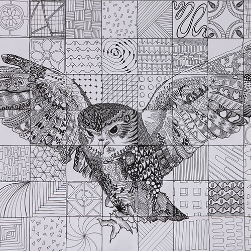
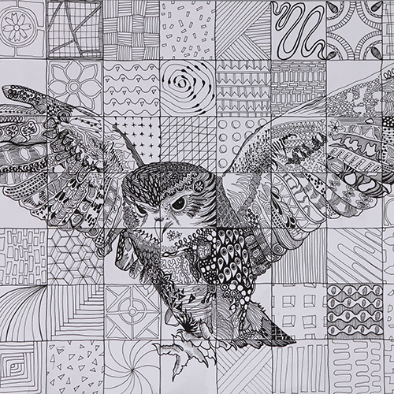

Hi, I'm Janie
I am an aspiring graphic and UI/UX designer
ABOUT
I am a sophomore at the University of Michigan pursuing a bachelor’s degree in Fine arts and a minor in Computer Science to become a graphic and UI/UX designer. I am interested in combining the aesthetic and the technical to create my unique form of art.
I was born in Seoul, South Korea, and moved to China at the age of ten. In China, I attended a Korean international school, a Chinese local school, and an American international school. Now, I am studying in the states, where more cultural diversity exists. Having spent more than half of my life in such a global environment, I have become much more receptive to new ideas and "disruptive" in the sense that I strive to think outside of the box. I am confident that my international background can contribute positively to any community.
Below is a photo of me at the age of five! It is one of my favorite pictures of myself.
WORK
As a visual artist, I love to experiment with a wide range of mediums. Some of my favorites include color pencils, pen, watercolor, and acrylic paint. While I had created mostly two-dimensional pieces until my freshman year at college, I have been playing extensively with three-dimensional materials since this summer. I am planning to take elective studio courses such as Intro to Sculpture and Intro to Ceramics next semester, so that I can continue to develop interest and skills in this area.
As an aspiring graphic and UI/UX designer, I have also been working on digital platforms. Taking Typography has allowed me to refine my skills in Adobe Illustrator and InDesign. The assignments and projects I did for these courses are shown in the course work page. Feel free to take a look!
I have also been building my programming skills in HTML, CSS, and javascript. To further develop my coding skills, I am planning to take Programming and Introductory Data Structures, a computer science course in C++, next semester.


 



COURSE WORK
In my first year at the University of Michigan, which was last year, I took all the required foundation courses for first-year art students, including observation drawing, two-dimensional art and design, three-dimensional art and design, and art and design history.
I'm currently taking two web design courses, one taught in the School of Information with a heavier focus on the actual programming and encompassing HTML, CSS, and Javascript, and another taught at the Penny W. Stamps School of Art and Design with an emphasis on interaction design, or the aesthetics over programming. I'm also taking Typography, which is a foundation course for graphic design and also a prerequisite for Poster Design and Interaction Design that I plan to take in my junior year. Digital Drawing, a taubman college course focusing on Rhinoceros 3D and Adobe Illustrator, is another course I'm taking. While it is an architecture course, it equates to a 200-level art studio course, fulfilling a course requirement for my BFA degree.
Below features some of the works I have developed and submitted for the courses I'm currently taking. Most of them have been made for my Digital Drawing and Typography classes.


CONTACT
Seafood Avocado Yakisoba
Restaurant: WOOWAA
Location: Shinsa-dong, Gangnam-gu, Seoul, South Korea
Rating: ★★★★☆
Avocado Burger &
Garlic Butter Fries
Restaurant: Downtowner
Location: 14, Dosan-daero 53-gil, Gangnam-gu, Seoul 06019, South Korea
Rating: ★★★★
Besides everything aforementioned, I love doodling, cooking, and eating! If you have any questions about my work or need recommendation for good restaurants in Seoul or Ann Arbor, email me or submit a message shown below. Also, feel free to take a look at my resume and learn more about what I do.
And lastly, thank you for visiting my website!